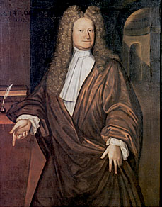

Albany was founded by a diverse group of opportunists known as the New Netherland Dutch. Attracted by the prospect of trading for furs, after the establishment of Fort Orange in 1624 these settlers came together on the site of the future Albany. By the 1650s, they had acquired house lots and had become identifiable in almost a hundred distinct family groups. Those pioneers married, raised large families, and formed the core population for what became the city of Albany in 1686. These children of New Netherland played a major role in the development of the city over the next century. More than half of the 16,000 historical characters that make up the "the people of colonial Albany" study population traced at least some of their heritage to New Netherland.
Although substantial new immigration from the Netherlands ceased after 1664, many newcomers came to the city over the next 150 years. The largest and most successful proportion of them would point to English as their native tongue. Mostly they arrived individually, settling in or moving on depending on opportunity and compatibility. Often, they caught on by marrying a daughter of New Netherland. Scottish-born and Dutch-speaking Robert Livingston was early Albany's most important newcomer. At the same time, many of the earliest settlers left the city - establishing new communities in a ring around Albany at Schenectady, Catskill, Kinderhook, and old Saratoga, taking up farming in surrounding Rensselaerswyck and in the greater countryside, or leaving the region entirely.
Of the newcomers who came to Albany after 1664, the most distinguishable group was those of African ancestry, almost all of whom were brought in as slaves. Like the Europeans, they gave birth to many children, some even were able to raise families, accounting for at least one-tenth of the 16,000 people who lived in the city of Albany before the Industrial Revolution.
 The next largest newcomer group included the several hundred soldiers and officials who came to Albany between 1676 and 1763 to serve at the fort and as agents of the British colonial empire. These young men mostly were recruited in Europe, chiefly in England and Ireland. Others were drawn from the other American colonies. Some of them found a niche in Albany providing transportation, hospitality, or supply services. A few were able to contribute a more rare skill or ability. They became attorneys, doctors, teachers, and businessmen. With connections to the British world, in many instances they were welcomed into traditional Albany households as husbands. One of these prized newcomers was Samuel Stringer.
The next largest newcomer group included the several hundred soldiers and officials who came to Albany between 1676 and 1763 to serve at the fort and as agents of the British colonial empire. These young men mostly were recruited in Europe, chiefly in England and Ireland. Others were drawn from the other American colonies. Some of them found a niche in Albany providing transportation, hospitality, or supply services. A few were able to contribute a more rare skill or ability. They became attorneys, doctors, teachers, and businessmen. With connections to the British world, in many instances they were welcomed into traditional Albany households as husbands. One of these prized newcomers was Samuel Stringer.
 Samuel
Stringer was Albany's first professional physician.
Born in Maryland in 1734 the son of an Annapolis physician, he was trained in
Philadelphia where he came in contact with the leading medical practitioners
of his day. Coming to Albany as a surgeon with the British army during the Seven
Years War, in 1758, he married Rachel Vanderheyden,
the daughter of an Albany merchant.
Samuel
Stringer was Albany's first professional physician.
Born in Maryland in 1734 the son of an Annapolis physician, he was trained in
Philadelphia where he came in contact with the leading medical practitioners
of his day. Coming to Albany as a surgeon with the British army during the Seven
Years War, in 1758, he married Rachel Vanderheyden,
the daughter of an Albany merchant.
The first outsider to open a medical practice in Albany, Stringer's education and skill attracted many patients and he was widely known as an innovator who dared to inoculate for smallpox. During the 1760s and 70s, he broadened his economic base by investing in city and frontier land, trading in export commodities, and selling medical supplies. Pillar of St. Peter's Anglican Church, the Albany Masonic lodge, and the agent of Sir William Johnson, on the eve of the American Revolution forty-year-old Samuel Stringer had become one of leading members of the Albany community.
At the outbreak of the War for Independence, Samuel Stringer joined the revolutionary movement. In 1775, the Continental Congress appointed him chief physician and director of hospitals in the North. The Albany hospital located near the old fort became a center of medical learning where a generation of American physicians trained or learned new ways to treat the sick and wounded. Stringer held the directorship until 1777 when he left the army and fought for American liberties on the home front.
For a time he was chairman of the Albany Committee of Safety, was elected a city alderman, and then served as one of the Commissioners for Detecting and Defeating Conspiracies, a political body charged with suppressing anti-revolutionary activities during the latter stages of the war.
With the coming of peace, Dr. Stringer built a grand home on Market Street where he served an extensive practice, assembled a notable medical library, and imported the finest medical products which he retailed to a growing number of medical practitioners serving the booming upstate area. He shared that complex with another exceptional newcomer, his son-in-law, lawyer Stephen Lush. By then, Stringer was revered as one of a number of learned medical men who had made Albany their base of operations and who founded the New York State Medical Society in 1806. Enlightened physician, revolutionary leader, and leading citizen of Albany, this one-time newcomer died at his home on July 11, 1817.
In March 1781, thirty-two non Albany native newcomers applied for and were able to purchase the "Freedom of the City." That group included a number of subsequently prominent New Yorkers and also represented one of the more visible portions of the new people of colonial Albany.
The so-called "Yankee Invasion" reached Albany in many significant ways. One-by-one, sons of New England had taken up residence in the city since the seventeenth century. Their presence intensified after the last colonial war and throughout the War years. However, following the end of the Revolution, many more New Englanders headed west as the pre-war shower became a flood of newcomers that transformed virtually every New York community. Their presence is well-documented in late-eighteenth century Albany.
The War for Independence brought many new people to the Albany community. A significant number of them stayed on after the war and joined with a healthy postwar in-migration from the other new American states and from Europe to propel Albany into the modern American mainstream. During the first half of the nineteenth century, Albany's population almost doubled every ten years. The capital of the State of New York has always been a destination for new people many of whom were seeking and were able to start new lives.
first posted: 1999; last revised 2/12/15